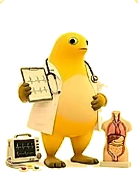

MILK FROG UNIVERSITY · STUDENT RECORDS
二十二个学院，
一百四十只奶蛙。
22 colleges. 140 frogs. One little student record system.
奶蛙大学是一所虚构的大学：22 个学院、140 个专业，每个专业都住着一只奶蛙。 我们把示例图里的形象，做成了一个能点、能查、能改的学生信息管理系统。

☺hi. 我是奶蛙。
SMALL FROG. BIG CAMPUS.
往下看 ↓
01 / 关于学校
ABOUT THE SCHOOL
一所给奶蛙开的大学。
A university built for frogs.
从医学院的白大褂，到航空服务学院的登机牌，奶蛙大学把 22 个学院、140 个专业 摊在同一张地图上。每一只专业奶蛙都有自己的制服、道具和小动作。
这里没有真的课堂，但有真的学生档案。系统里预置了约 320 名学生的学号、姓名、 性别、学院、专业、班级、联系方式与备注，并且支持随时增删改查。
22个学院 · COLLEGES
140个专业 · MAJORS
≈320份学生档案 · RECORDS
11组助手动作 · ACTIONS
02 / 系统功能
THE SYSTEM
四件小事，够用了。
Four little things. All you need.
01
学生档案
添加、编辑、删除、查看详情。学号自动生成，重复学号会自动拦下。
CRUD · MYSQL DB
02
快速检索
输入学号或姓名，列表实时过滤；也可以按学院、专业逐层筛选。
SEARCH · FILTER
03
学院专业浏览
点任意一只专业奶蛙，直接跳进这个专业的学生名单。
BROWSE BY FROG
04
奶蛙智能助手
右下角那只：会眨眼、会思考、会睡觉、会来回走，还能帮你找人。
PET ASSISTANT
03 / 走进校园
STEP INTO CAMPUS
从一只奶蛙，走到一个专业。
From one frog to one major.
01
挑一个学院
22 个学院按专业数量排开，医学院最热闹。
02
点一只奶蛙
每只奶蛙代表一个专业，点它就进入该专业。
03
看一份名单
名单里的学生可以直接查看详情或编辑。
04 / 开始使用
START HERE